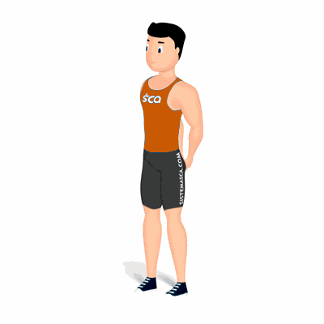

Mãos Entrelaçadas Para Trás

Movimento de alongamento dos músculos peitorais e dos deltoides anteriores. Preparando-os para a atividade física.
Ficha Técnica
Tipo: Alongamento
Grupo Muscular: Peito
Aparelho: Nenhum
Músculos: Nenhum
Como realizar
- Na posição em pé;
- Braços ao lado do corpo;
- Traga as mãos para trás e entrelace os dedos;
- Eleve as mãos para trás o mais alto que conseguir;
- No ponto mais alto, manter entre 20 a 30 segundos;
- Retorne à posição inicial de forma lenta.
 RC STORE
RC STORE